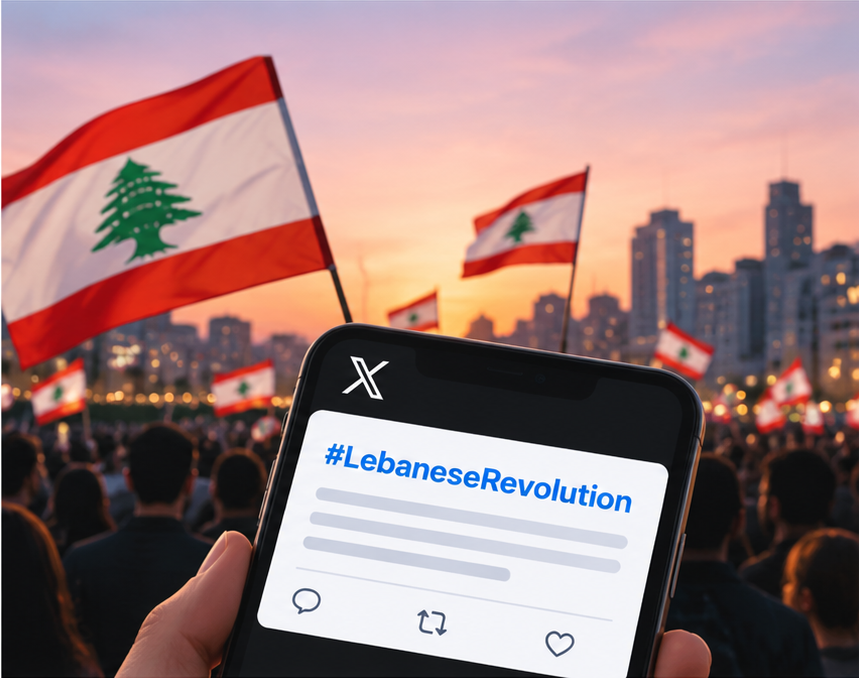

Online Content
Online reviews, forum discussions, social media posts

Session 4: Qualitative Research Methods & Positioning
L. Liu & Dr Mo Cheded
KEDGE Business School
Materials by Dr. Mohammed CHEDED; Adapted by Lihua Liu with AI Assistance (ChatGPT & Codex).KEDGE Educational Use Only; Reuse Requires Permission.
Designing Qualitative Research
Gathering Qualitative Data
Making Sense of Qualitative Data
Researcher Positioning
Group Assessment
Designing Qualitative Research
Gathering Qualitative Data
Making Sense of Qualitative Data
Researcher Positioning
Group Assessment
A simplified research report structure — formats vary across disciplines and publications.
The methodology explains how you will answer your research question.
Think about a time when you participated in or conducted research.
What research have you participated in or conducted?
| Primary | Secondary | |
|---|---|---|
| Qualitative | ||
| Quantitative |
| Primary | Secondary | |
|---|---|---|
| Qualitative | Non-numerical data collected firsthand. Examples: Interviews, focus groups, field observations. | Existing non-numerical data collected by others. Examples: Online reviews, published interview transcripts, company documents. |
| Quantitative | Numerical data collected firsthand. Examples: Structured surveys with numerical responses, controlled experiments. | Existing numerical datasets. Examples: Sales statistics, census data, financial datasets. |
Primary vs. secondary describes where data comes from; qualitative vs. quantitative describes the nature of the data.
Data that already exists and was originally collected for another purpose.
Online reviews, forum discussions, social media posts
Company reports, policies, published interviews
Historical advertisements, organizational records
Secondary data can be analyzed using either qualitative or quantitative methods.
Using existing data does not mean the researcher has less responsibility.
Choose relevant and credible data sources.
Screen, categorize, and prepare the data.
Interpret patterns and answer the research question.
The data may already exist, but the research questions, selection, and interpretation remain the researcher's responsibility.
Drag a card to a category, or select a card and activate a category heading.
Company and industry labels illustrate applications; they do not imply exclusive ownership or invention.
Qualitative research seeks to understand how people experience, interpret, and make sense of the world.
Focuses on people's perspectives and the context surrounding their experiences.
Often uses interviews, observations, conversations, and documents to capture detailed information.
Identifies patterns, themes, and meanings rather than primarily estimating numerical relationships.
Example: “How do customers describe their experiences with a luxury brand?”
Explores people's experiences and perspectives in depth.
Adapts methods to the research question and emerging findings.
Examines behavior within real-world settings.
Concepts may be difficult to define and measure consistently.
It can be difficult to determine which factors explain an observed phenomenon.
Findings may not apply to a wider population.
Adapted from original course materials; limitations based on Hammersley (2008).
Designing Qualitative Research
Gathering Qualitative Data
Making Sense of Qualitative Data
Researcher Positioning
Group Assessment
Different methods help us explore different kinds of research questions.
Understand individual experiences and perspectives.
Explore opinions through group discussions.
Study behavior in real-world settings.
Investigate documents, records, and visual materials.
Study interactions and cultures in online communities.
Examine how phenomena change over time (research design).
In this session, we will explore interviews, focus groups, archival research, and netnography in more detail.
Fixed questions asked in the same order.
Highly standardized, with little flexibility.
Open conversation without a fixed question sequence.
Highly flexible and participant-led.
Prepared questions with flexible follow-ups.
Balances consistency and flexibility.
Semi-structured interviews are widely used in qualitative research because they combine guidance with flexibility.
A flexible, one-to-one conversation using open-ended questions to explore people's experiences and perspectives.
Explore why people think, feel, or behave in certain ways.
Understand how individuals experience and interpret situations.
Discover how people evaluate options and make choices.
Understand new behaviors or experiences that are not yet well understood.
Key Distinction: Interviews prioritize depth and contextual understanding over statistical representativeness.
Journal of Fashion Marketing and Management (2025)
Method: 39 semi-structured interviews
Research Purpose: Explore the personal and symbolic meanings of second-hand clothing consumption.
Images are illustrative and are not from the original papers.
Italian Journal of Marketing (2025)
Method: 21 semi-structured interviews
Research Purpose: Explore how consumers interpret celebrity and influencer perfume endorsements.
Images are illustrative and are not from the original papers.
A moderated group discussion that explores participants' opinions, experiences, and reactions to a specific topic.
New products and concepts
Packaging alternatives
Campaign reactions
Brand perception, customer experience, etc.
Key Distinction: Focus groups reveal how participants respond to and build on one another's ideas.
Optional Learning · After Class: How to Conduct a Focus Group — UBC LEARN ↗The systematic analysis of existing documents, records, and other materials to investigate a research question.
Understand how practices, strategies, or perceptions evolve over time.
Examine policies, reports, and internal documents to understand organizations.
Explore advertisements, press releases, and brand communications.
Use available records when direct access to participants is limited.
Key Distinction: Archival research analyzes existing materials rather than collecting new data directly from participants.


01 — Visual storytelling with archetypes: how single-image content can tell cohesive and consistent brand stories
Research Method: Qualitative visual analysis of 1,244 Instagram posts from seven wine brands, complemented by 10 interviews.
Key Takeaway: Brand archetypes help explain how individual Instagram images contribute to cohesive and consistent brand stories.

Figure 3 — Nature as a Marketable Commodity
02 — Can Nature Sell Beauty? Historicising Cosmetic Advertising and Its Modern Greenwashing Parallels
Research Method: Qualitative analysis of 118 historical cosmetics advertisements.
Key Takeaway: Nature-based beauty marketing existed long before modern greenwashing.
A qualitative research method adapted from ethnography to understand online communities and cultures through their interactions.
Explore shared beliefs, values, and practices.
Observe discussions and behaviors online.
Interpret the meanings behind online activities.
Key Distinction: Netnography studies online communities and their cultures, not just isolated online posts.
Kozinets (2010, 2012)

Mohammed Cheded & Chihling Liu
Research Method: Online discussion analysis
Research Focus: Gender identity in online communities

Dima Louis & Michelle Mielly
Research Method: Qualitative analysis of tweets
Research Focus: Collective identity and temporality
AI-generated illustrations inspired by the research topics; not original figures or data from the papers.
Which method best helps you answer your research question?
How have previous studies investigated similar questions?
Do you have the time, access, and expertise needed?
The best method is the one that fits your research question and is feasible to conduct.
Designing Qualitative Research
Gathering Qualitative Data
Making Sense of Qualitative Data
Researcher Positioning
Group Assessment
A flexible conversation guided by a clear purpose.
Explain the study, obtain informed consent, and ask permission to record.
Begin with easy questions about the participant's background or experience.
Explore key topics using open-ended questions and relevant follow-up questions.
Invite additional comments, answer questions, and thank the participant.
Follow an interview guide, but remain flexible and listen actively.
Let's focus on one key interviewing skill: designing clear, open-ended questions.
Imagine you are researching sustainable leadership.
“Do you practice sustainable leadership?”
What's wrong with this interview question?
What does "sustainable leadership" mean?
Does the participant understand the concept?
Does the wording encourage a desirable answer?
“Can you describe a recent decision where you considered its impact on people or the environment?”
“What factors influenced your decision?”
Ask about concrete experiences rather than assuming participants understand academic concepts.
How did researchers organize and conduct interviews?
November 2020 – July 2021
28 interviews conducted across several locations in India.
24 hospitals, 1 university, and 1 waste management company.
Physicians, pharmacists, managers, and administrative staff.
Semi-structured interviews conducted by phone.
Duration: 10–40 minutes.
114 pages of interview transcripts.
Transcribed in English, with some responses translated from Hindi.
Qualitative coding using NVivo 12.
The first round of coding identified nine themes.
Interview research involves decisions about participants, data collection, preparation, and analysis.
Source: N. Yakovleva, PhD Qualitative Research Course, Session 8 — Coding Qualitative Data (KEDGE Business School).
Example: Studying historical cosmetics advertisements.
Which brands, advertisements, and time periods are relevant to your research question?
Where can you find the advertisements, and which should be included?
Who created the advertisements? For whom? Why? What might be missing?
Save the images, record dates and sources, and organize the selected materials.
Archival research requires careful selection, evaluation, and organization of existing materials.
Document Analysis Worksheets — US National Archives
Designing Qualitative Research
Gathering Qualitative Data
Making Sense of Qualitative Data
Researcher Positioning
Group Assessment
How do researchers make sense of qualitative data?
Transcribe interviews and organize documents.
Read and reread the data to understand its content.
Assign meaningful labels to relevant data segments.
Identify patterns and relationships across codes.
Explain what the patterns mean for the research question.
Qualitative analysis transforms raw data into meaningful insights through systematic interpretation.
The process is iterative: researchers may revisit earlier steps as their understanding develops.
Giving meaningful labels to segments of qualitative data.
“I want to buy sustainable products, but they are often too expensive. Sometimes I am not even sure whether the environmental claims are trustworthy.”
Code 1
Code 2
One excerpt can contain multiple codes.
Coding helps researchers organize, compare, and interpret qualitative data.
Categorize and prioritize qualitative data.
Retrieve passages with the same code and compare them across interviews or documents.
Identify relationships between codes, themes, and ideas.
Codes are developed from the data.
Codes are informed by existing theory.
Coding helps researchers organize data and identify meaningful patterns.
How do researchers identify broader patterns in qualitative data?
A theme captures a meaningful pattern across the data that helps answer the research question.
Codes identify meaningful details. Themes connect those details into a broader interpretation.
Illustrative example: consumer perceptions of sustainable products.
Cost and accessibility challenges
Uncertainty about sustainability claims
Why do young adults spend more time on social media than they intend?
“Honestly, TikTok is my biggest distraction. I open it for a quick study break, telling myself, 'Just five minutes,' but then I get stuck doomscrolling for almost an hour. My For You Page somehow knows exactly what I want to watch, and every time I try to leave, there's another video that makes me think, 'Okay, just one more.' My friends are always sending me memes and trending videos, and I get serious FOMO if I don't keep up. Watching funny videos is also my way of decompressing after a stressful day. But then I check the time and realize I've done absolutely nothing. I've tried setting screen-time limits, but I just hit 'Ignore' every time. It's honestly a love-hate relationship.”
Fictional interview excerpt for classroom practice.
Work in pairs. Identify three possible codes and organize them under one broader theme.
Complete all four fields to generate your tree.
Your coding tree will appear here.
Download your coding tree and upload the PNG to Wooclap to share it with the class.
Software can support qualitative analysis, but interpretation remains the researcher's task.
Organize, code, and explore qualitative data.
Organize, code, and explore qualitative data.
Organize, code, and explore qualitative data.
Qualitative data can also be coded manually. Software supports analysis but does not replace the researcher's interpretation.
How might our perspectives influence important business decisions?
Our background, experiences, and interests can shape how we approach research.
What perspectives do I bring?
Critically examining how our assumptions and interests may influence research decisions and interpretations.
How might my perspectives influence the findings?
A company commissions market research before investing €5 million in a new product. Two researchers analyze the same customer interviews.
Believes strongly in the product's potential and focuses on positive customer reactions.
Is skeptical about the market and focuses on customer concerns and risks.
Could their assumptions influence the recommendation to invest €5 million?
Reflexivity helps researchers question their assumptions before those assumptions shape important decisions.
Business Case: A company is considering a €5 million product launch.
What do we investigate?
“A researcher who favors the launch may focus on purchase interest rather than reasons for rejection.”
How do we ask?
“A researcher may ask leading questions or unintentionally encourage positive responses.”
How do we interpret?
“A researcher may emphasize enthusiastic customers while overlooking repeated concerns about price.”
Reflexivity matters throughout the research process, not only when interpreting results.
You are advising a company considering a €5 million product launch.
Customers appreciate the product's innovative features and design.
Several customers question the price and whether they would actually buy it.
Your choice may be reasonable — but what matters is your reasoning.
Please share your decision and explain your reasoning through Wooclap.
Reflexivity means recognizing and questioning how our assumptions influence decisions.
Designing Qualitative Research
Gathering Qualitative Data
Making Sense of Qualitative Data
Researcher Positioning
Group Assessment